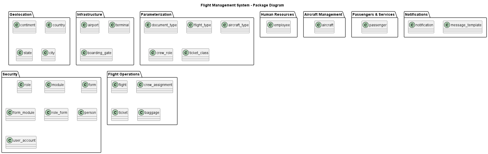
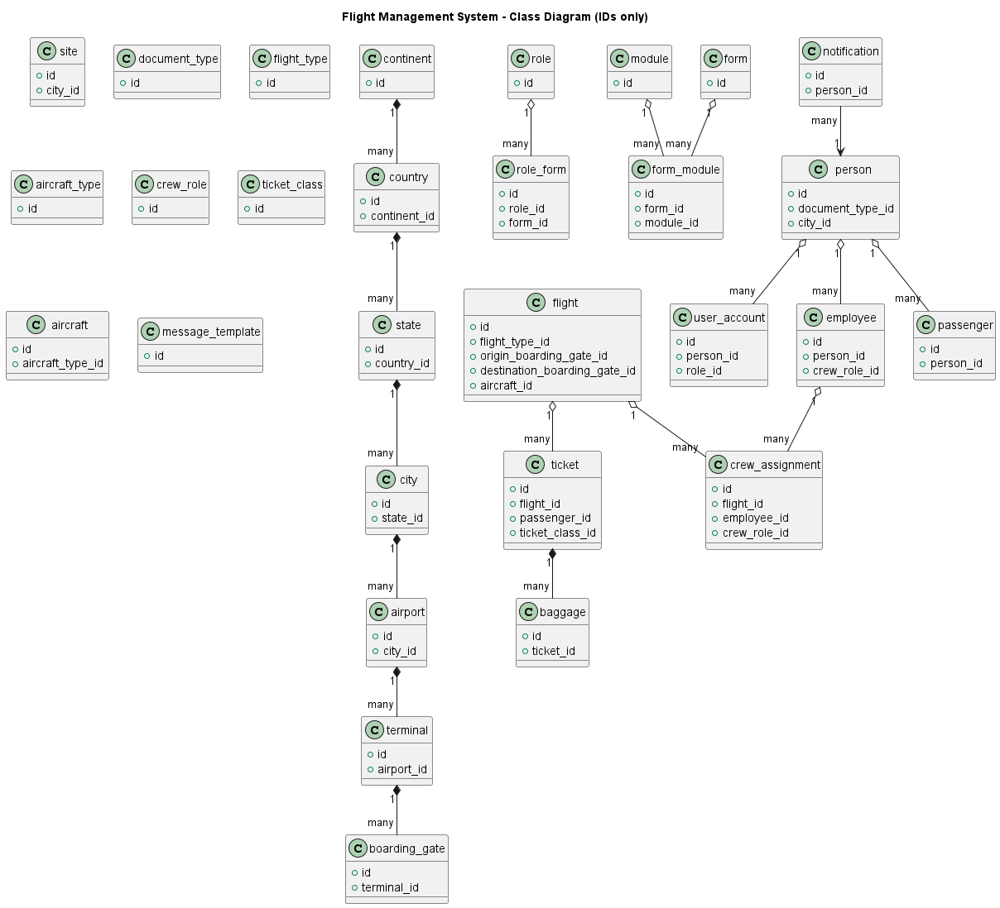
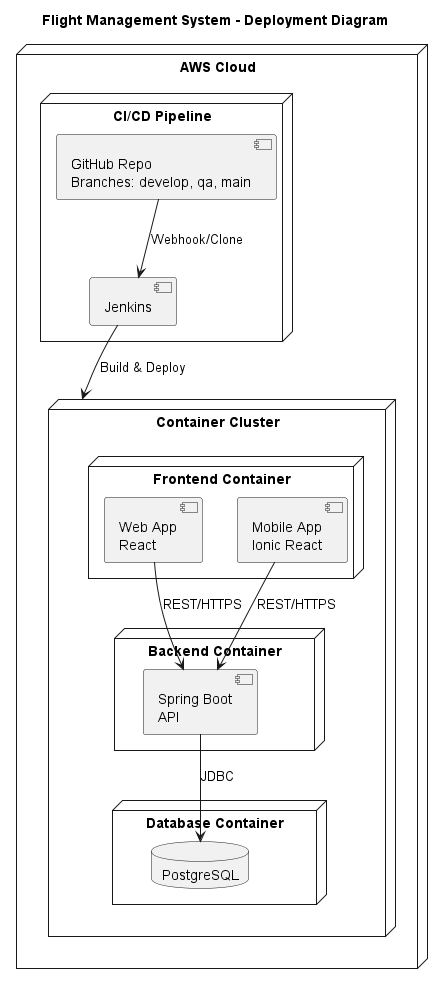
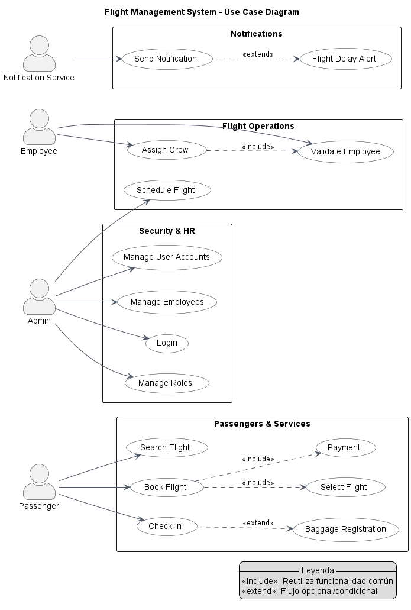

Package Diagram

PlantUML Source
@startuml
title Flight Management System – Package Diagram
package "Geolocation" {
class continent
class country
class state
class city
}
package "Infrastructure" {
class airport
class terminal
class boarding_gate
}
package "Parameterization" {
class document_type
class flight_type
class aircraft_type
class crew_role
class ticket_class
}
package "Security" {
class role
class module
class form
class form_module
class role_form
class person
class user_account
}
package "Human Resources" {
class employee
}
package "Aircraft Management" {
class aircraft
}
package "Flight Operations" {
class flight
class crew_assignment
class ticket
class baggage
}
package "Passengers & Services" {
class passenger
}
package "Notifications" {
class message_template
class notification
}
@enduml
Class Diagram

PlantUML Source
@startuml
title Flight Management System – Class Diagram (IDs only)
class continent {
+ id
}
class country {
+ id
+ continent_id
}
class state {
+ id
+ country_id
}
class city {
+ id
+ state_id
}
class site {
+ id
+ city_id
}
class airport {
+ id
+ city_id
}
class terminal {
+ id
+ airport_id
}
class boarding_gate {
+ id
+ terminal_id
}
class document_type {
+ id
}
class flight_type {
+ id
}
class aircraft_type {
+ id
}
class crew_role {
+ id
}
class ticket_class {
+ id
}
class role {
+ id
}
class module {
+ id
}
class form {
+ id
}
class form_module {
+ id
+ form_id
+ module_id
}
class role_form {
+ id
+ role_id
+ form_id
}
class person {
+ id
+ document_type_id
+ city_id
}
class user_account {
+ id
+ person_id
+ role_id
}
class employee {
+ id
+ person_id
+ crew_role_id
}
class aircraft {
+ id
+ aircraft_type_id
}
class flight {
+ id
+ flight_type_id
+ origin_boarding_gate_id
+ destination_boarding_gate_id
+ aircraft_id
}
class crew_assignment {
+ id
+ flight_id
+ employee_id
+ crew_role_id
}
class passenger {
+ id
+ person_id
}
class ticket {
+ id
+ flight_id
+ passenger_id
+ ticket_class_id
}
class baggage {
+ id
+ ticket_id
}
class message_template {
+ id
}
class notification {
+ id
+ person_id
}
' --- RELATIONSHIPS ---
continent "1" *-- "many" country
country "1" *-- "many" state
state "1" *-- "many" city
city "1" *-- "many" airport
airport "1" *-- "many" terminal
terminal "1" *-- "many" boarding_gate
person "1" o-- "many" user_account
person "1" o-- "many" passenger
person "1" o-- "many" employee
employee "1" o-- "many" crew_assignment
flight "1" o-- "many" crew_assignment
flight "1" o-- "many" ticket
ticket "1" *-- "many" baggage
role "1" o-- "many" role_form
form "1" o-- "many" form_module
module "1" o-- "many" form_module
notification "many" --> "1" person
@enduml
Sequence Diagram

PlantUML Source
@startuml
title Flight Booking – Sequence Diagram
actor Passenger
participant "Security\n(Person)" as Person
participant "Flight Operations\n(Flight)" as Flight
participant "Flight Operations\n(Ticket)" as Ticket
participant "Flight Operations\n(Baggage)" as Baggage
participant "Notifications\n(Notification)" as Notification
Passenger -> Person : Provide personal data
Person --> Passenger : Validate identity
Passenger -> Flight : Search available flight
Flight --> Passenger : Return flight details
Passenger -> Ticket : Request booking
Ticket -> Flight : Verify availability
Flight --> Ticket : Availability confirmed
Ticket --> Passenger : Ticket created
Passenger -> Baggage : Register baggage (optional)
Baggage --> Passenger : Baggage confirmed
Ticket -> Notification : Send booking confirmation
Notification --> Passenger : Confirmation message delivered
@enduml
Deployment Diagram

PlantUML Source
@startuml
title Flight Management System – Deployment Diagram
node "AWS Cloud" {
node "Container Cluster" {
node "Frontend Container" {
component "Web App\nReact" as Web
component "Mobile App\nIonic React" as Mobile
}
node "Backend Container" {
component "Spring Boot\nAPI" as API
}
node "Database Container" {
database "PostgreSQL" as DB
}
API --> DB : JDBC
Web --> API : REST/HTTPS
Mobile --> API : REST/HTTPS
}
node "CI/CD Pipeline" {
component "Jenkins" as Jenkins
component "GitHub Repo\nBranches: develop, qa, main" as GitHub
GitHub --> Jenkins : Webhook/Clone
Jenkins --> "Container Cluster" : Build & Deploy
}
}
@enduml
Use Case Diagram

PlantUML Source
@startuml
left to right direction
skinparam packageStyle rectangle
skinparam usecase {
BackgroundColor White
BorderColor #1f2937
ArrowColor #4b5563
}
skinparam ActorStyle awesome
title Flight Management System – Use Case Diagram
actor "Passenger" as Passenger
actor "Employee" as Employee
actor "Admin" as Admin
actor "Notification Service" as Notifier
package "Passengers & Services" {
(Search Flight) as UC_Search
(Select Flight) as UC_Select
(Book Flight) as UC_Book
(Payment) as UC_Payment
(Check-in) as UC_Checkin
(Baggage Registration) as UC_Baggage
}
package "Flight Operations" {
(Schedule Flight) as UC_Schedule
(Assign Crew) as UC_Assign
(Validate Employee) as UC_Validate
}
package "Security & HR" {
(Login) as UC_Login
(Manage Roles) as UC_Roles
(Manage User Accounts) as UC_Users
(Manage Employees) as UC_Employees
}
package "Notifications" {
(Send Notification) as UC_Notify
(Flight Delay Alert) as UC_Alert
}
' Relaciones de actores
Passenger --> UC_Search
Passenger --> UC_Book
Passenger --> UC_Checkin
Employee --> UC_Assign
Employee --> UC_Validate
Admin --> UC_Login
Admin --> UC_Roles
Admin --> UC_Users
Admin --> UC_Employees
Admin --> UC_Schedule
Notifier --> UC_Notify
' Includes (reutilización)
UC_Book ..> UC_Select : <<include>>
UC_Book ..> UC_Payment : <<include>>
UC_Assign ..> UC_Validate : <<include>>
' Extends (comportamiento opcional/condicional)
UC_Checkin ..> UC_Baggage : <<extend>>
UC_Notify ..> UC_Alert : <<extend>>
legend right
== Leyenda ==
<<include>>: Reutiliza funcionalidad común
<<extend>>: Flujo opcional/condicional
endlegend
@enduml